设备厂付钱买的是可兑现的加工结果
柏楚电子（688188.SH）中文证券投资分析 · 团队审阅稿
研究日 2026-11-23 · 估值基准 2026-11-12 上海证券交易所未复权含权收盘
设备厂买柏楚，是为了交付一台能按约定速度、精度和良率工作的机床。控制系统把图纸变成加工轨迹，负责运动、激光、气体和随动配合。积累的工艺参数、工程师培训和维修经验随首台设备投入使用。新一代同机型若沿用接口、刀路与工艺库，采购部门就可以用较少的重复验证成本交付下一批机床。这里最有价值的是能持续缩短调试和返工的能力。订单是否复购，还要同 OEM、同机型、同功率观察净成交价与留存。
软硬件配套扩大了柏楚在单机上的可收金额，也把更多采购、库存、质保和驻场工作留给公司。只要净增毛利足以付完适配、安装、售后、税、周转和购建，配套就能增加可分给长期资本提供者的现金。反之，即使同一客户下单更多，增长也可能先被交付负担和备货吃掉。2025 年智能硬件与控制系统出货比上升，但同订单附着、赔付和回款尚缺披露。审阅模型因此把硬件留在现有经营路径，并把弧焊、锂电焊接、超快微加工的增量保持为零。
证券判断。 同日基准为 81.81 元，较 96.20 元收盘 -14.96%，冻结基准 92.75774737785618 元。旧模型以系统量与组价统一推动收入。新版要求先有可服务新机和可替换的存量、再有取得份额和验收，然后让费用与占款跟随放量。这减少了显性和稳定期可兑现的经营价值。改善路径能够超过收盘，现价需要的证据落在客户留存、组合毛利与回款，三者须同时观察。
图表 01 每股估值与含权价差

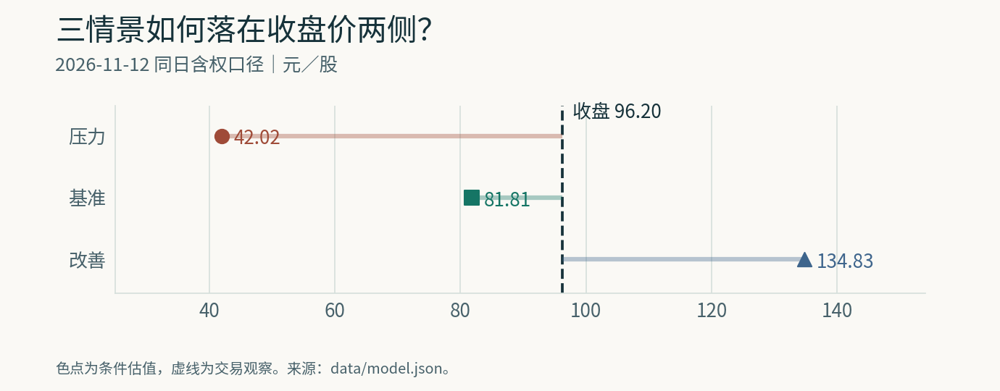
| 经营情景 | 每股价值·元 | 较96.20元价差 | 收益率差额 | 终值占EV |
|---|---|---|---|---|
| 压力 | 42.02 | -54.18 | -56.32% | 60.08% |
| 基准 | 81.81 | -14.39 | -14.96% | 68.44% |
| 改善 | 134.83 | +38.63 | +40.16% | 73.57% |
点图用同日含权收盘作参照，点旁保留每股原值。九章的证据关系见研究思维导图。
摘要｜两次检验给了不同的答案
2022 年检验规模遇到压力时，核心利润失去多少。 营收从 9.13 亿元回落到 8.98 亿元，核心 EBIT 从 4.84 亿元降至 4.34 亿元。CFO−购建却从 3.35 亿元上升至 5.23 亿元，其中购建回落贡献 0.67 亿元。会计利润下降和现金改善可以同时成立。2022 年的现金释放给经营带来缓冲，却不足以证明制造或销售的边际盈利改善。
2026 年检验组合扩张时，收入能留下多少经营利润。 三季单季收入 6.01 亿元，同比增 16.51%。毛利率降 5.76 个百分点，核心 EBIT 只增约 3.34%。扣非归母增 20.83%，报表口径还带入正常化模型剥离的财务、其他收益、减值等项目。单季现金改善与 9 月末贸易占款上升并存，结论要看净收款能否跟上备货，以及订单对应的售后成本是否按预期平稳。
最强反方。 高功率换机和硬件配套确实能放大销量与订单金额，但价格让利、保修责任和库存天数也可能上升。如果下一份定期报告只显示营收与预收增加，期后实际售价、产品毛利和收款还不足以确认新增现金。最有判别力的证据是同机型新签与续购价格、含硬件与不含硬件的净毛利，以及对应交付批次的到款和退货。
反推门槛。 即便 2027 年控制量增长 11.71%，当库存天数较基准少 25 天、增量售后率少 0.6 个百分点时，稳定核心 EBIT 率还需约 56.69%。库存多 25 天且售后率多 2 个百分点时，同一量增需约 57.05%。这些是固定其他输入下的等价条件。它们也说明一次季报露出的收入惊喜，无法单独覆盖现价对未来利润率的要求。
图表 02 九章阅读路径

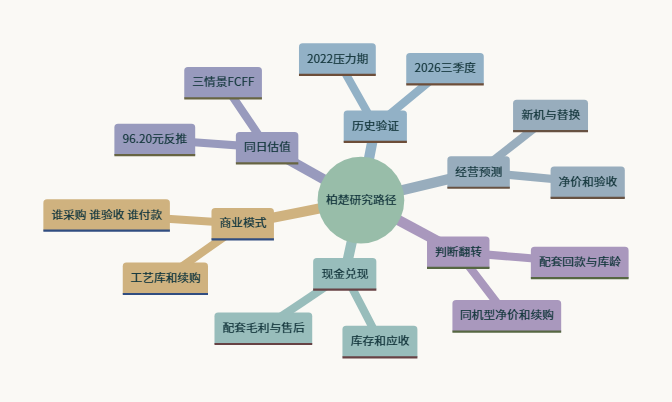
- 01 摘要与判断01
- 02 商业模式与竞争03
- 03 多年经营阶段08
- 04 收入、成本和费用13
- 05 资本、现金和回报19
- 06 新业务和海外24
- 07 逐年预测和留出28
- 08 估值、权益和反推34
- 09 反方与裁定39
柏楚卡在哪一层｜从光和机到加工结果
激光器负责出光，光学器件与切割头决定光如何到达工件与如何调焦，伺服和机械本体负责在负载下按指令移动。控制系统位于图纸、工艺和物理设备之间，它把希望切出的形状变成依次执行的轨迹、速度、气体和穿孔指令。OEM 负责把这些部件装到整机上，并向制造企业承诺按质量、节拍和安全要求交付。终端用户验收的是自己生产环境中的加工结果。柏楚按其与 OEM 或项目客户的交易边界确认收入，终端整机的销售总价不属于柏楚。
下图把实物流与验收、回款放在一条线上。柏楚和光源通常各有交易合同，现金方向由客户与结算安排决定。系统先卖给 OEM 时，设备终端的需求通过 OEM 的交付与复购传导。柏楚直接或经集成交付一整线时，安装、现场验收、备件和回款风险的暴露更大。年报主营直销表示发行人的签约方式，无法证明其客户都属于终端制造商。
图表 03 设备、验收与收款的流向

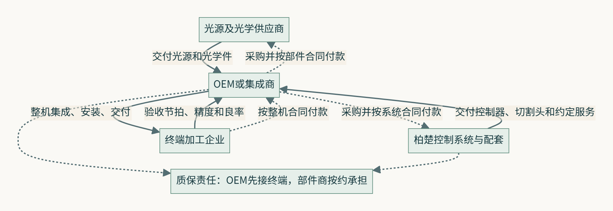
产业链为采购、交付与质保的机制示意。订单证据应同时记录合同双方、验收节点和实际付款人。
高功率厚板切割的经济价值常在穿孔、安全和返工，薄板批量则更容易从节拍和排样算出价值。管材方案要处理旋转轴、夹持与干涉，三维要处理复杂曲面、姿态和实际边界。比较竞争者应先固定工件、功率、软件接口、验收条款和服务地域，然后对同一道工序计量速度、合格率及停止时间。放在不同设备层的市场占有率相加，无法说明柏楚还能拿到多少新机。
控制系统｜旧产品层与新应用层交错
板卡、随动与总线回答控制功能怎样实现。板卡把电脑与设备信号联系起来，随动用于控制切割头与材料表面之间的距离，总线把控制器、伺服与功能单元联接起来。平面、管材、三维回答用户如何加工。一个平面解决方案可以有板卡或总线，也可以将以前单独出售的随动功能集成。2023 年报已说明部分产品集成随动导致原随动销售下降。若只用旧品类的数量求增长，就会把组合调整当成客户流失，或把同一台设备中的多个硬件单元重新计成多套解决方案。
公司各产品的收费以合同里的设备或系统交付计量。软件、控制器及配件若被定价为一组，对外披露的组收入隐含多种功能。2025 年平面、管材、三维收入合计 18.44 亿元，除以 65,064 套是约 2.83 万元的解决方案当量。这个商数提供模型收入起点。它同时含应用、档次、配件和服务影响，无法代表切换前后同一控制器的售价。
图表 04 旧产品分类与主营闭合
| 原产品 | 收入·百万元 | 成本·百万元 | 毛利·百万元 |
|---|---|---|---|
| 随动 | 170.30 | 22.62 | 147.68 |
| 板卡 | 373.65 | 66.24 | 307.40 |
| 总线 | 327.15 | 44.17 | 282.98 |
| 切割头 | 334.64 | 75.74 | 258.90 |
| 其他 | 190.15 | 60.47 | 129.68 |
条件预测中的新机量采用归一化规模，再经适配和取得份额过滤。装机暴露从既往控制出货折算。这个分母可以测试“份额或换机多一些”的价值，但它不是全行业销量或公司实际可更新的存量台账。分功率段归因时建议取得同规格机型的整机验收台账，再比较供应商选择期的净价、保修年限以及卖出的份数。只要货号或接口变了，就先桥到同一功能范围。
为什么同一 OEM 可能续购
采购决定可以写成两段。首单比较硬件报价、工程工时、兼容范围、供应保障和故障后的责任划分。到了续购，采购同时问换供应商能节省多少、换完还需花多少重新调试、重训操作工和覆盖质保。如果原工艺参数可重复使用、设备厂能从售后部署中节省几次返工，原厂就有更强的留存；若新机平台变更本来就需重新开发，先发优势会变小。
以试算为例，每台新机更换技术方案要多用两个工程师工作日，假设每天两人的完全工时成本合计 1,600 元、重验导致一天停机损失 2,000 元，换方案须至少节约 5,200 元才抵消首批成本。在 20 台同机型上复用同一次验证时，前述固定成本摊到单台约 260 元，还需另加每台培训及服务。这个例子说明优势和客户规模有关。工时、停机损失及可复用台数是演示条件，证据集没有柏楚客户采购合同据以认定实际金额。
图表 05 续购应分别看到选择、现场成本与价格

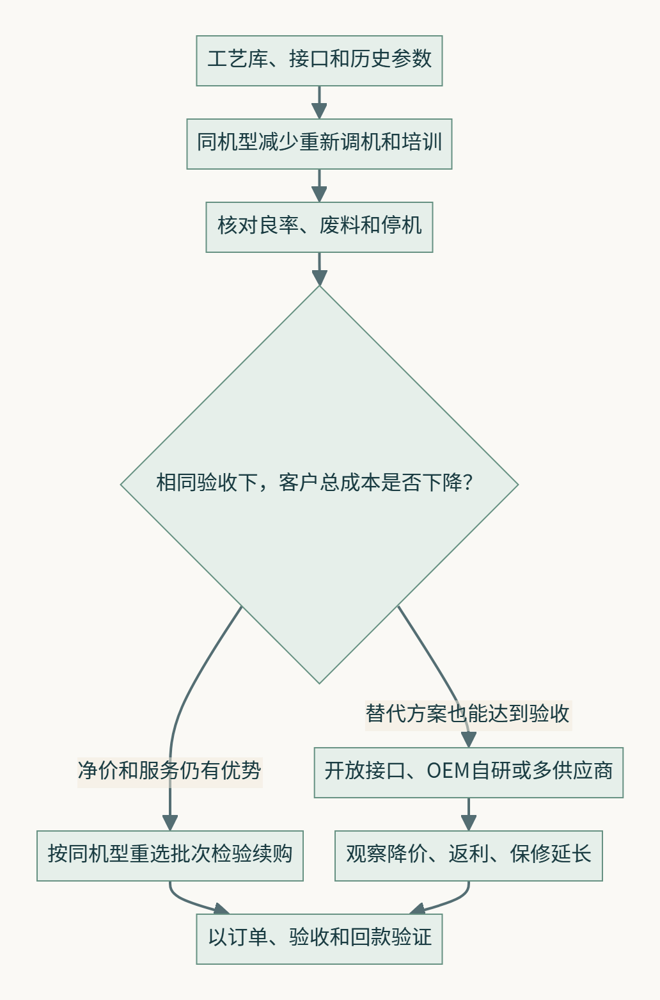
同一经济收益也可以来自行业景气，客户扩产时所有合格供应商都有增单。为了区分，应给 OEM cohort 同一套标识，分别数期初仍在产机型、当期可换机型、实际被替换数、继续使用柏楚的数量。续购率以本轮具有重新选择机会的机型或设备为分母，历史“覆盖客户”可以包括零采购或停产客户。若换供应商后的良率不变、交付更快且同条件净价下降，强黏性的解释会先被推翻。
配套成交与整线验收｜边界越大，承担越多
当 OEM 买控制加切割头，柏楚可减少异构的适配步骤。BCS210E 的产品资料直接标明对 BLT 切割头和若干 FSCUT 系统的适配。另有型号文档包含非波刺头所用放大器，说明方案存在兼容路径。对客户有据的价值是减少对焦、标定、碰撞及现场故障责任拆分，资料不能给出配套后的真实运行良率、终端停机成本或实际付费。报价要以净额读，折扣、返利与退换需要在同订单核对。
当交付从控制扩展到整线，OEM 或集成商依然可能承担机械本体、机器人、工装和现场安全，项目要按验收条款判断收入时点。客户付的预收在验收前形成合同负债，短期提升现金却尚未说明确认收入或改善利润。整线如果需在人机协同、来料公差及现场换产上反复调试，销售增长可能对应更重的资产、应收和现场工时。该差异决定模型中的售后费用、接受率和周转不能只用一个配套比例共同替代。
图表 06 合同边界与现金暴露
| 交付物 | 付款人及验收 | 增量资金风险 |
|---|---|---|
| 控制 | OEM；约定系统功能及机型调试 | 研发、量产备件、OEM账期 |
| 控制＋头 | OEM；成套匹配及质保 | 部件入库、适配、维修、折扣 |
| 整线及项目 | 集成或工厂；工位与现场验收 | 预收、发出、驻场、尾款和项目购建 |
客户的验收验的是切割速度、形位偏差、烧边、停机、联锁以及重复加工。采购的回款依据才是合同节点。用户提出的“谁验收、谁返工”应从失效的工件或批次向供应链追，安装返工可由 OEM、部件商或系统商承担。假设所有软硬件一体化项目都复制轻软件的毛利，会漏掉这个风险。在没有客户级订单时，本稿用每 100 元增量收入的合格线而不是假设每套约定服务费。
竞争要看同一工件、同一控制层和同一批设备
平面中功率的对比对象是同技术路线可替代的切割控制、OEM 自研和多供应商。竞争时可能发生两种相反变化。一种是新工艺越复杂，已积累工艺库的系统越能缩短复制调机时间；另一种是 EtherCAT 等通用接口降低集成成本，设备厂可在第二供应商之间竞价。高功率厚板必须对可运行功率、材料厚度和具体工艺定分母。海外品牌的本地服务和 OEM 自研会改变谁为升级付费；把国内中低功率的供给份额套到海外高功率，会虚增可服务台数与胜率。
金橙子招股书区分振镜和伺服路线，可用于检验精密加工业务边界。在振镜打标和超快微加工，精度、响应和工艺往往由不同部件决定。维宏可比较部分伺服激光数控，德国系统及 OEM 自研可比较同机型形成的替代选项。锐科偏激光源，大族偏整机，分别适合观察价格传导与设备景气。汇川在工业自动化、驱动等多业务的综合估值，无法作为柏楚激光数控业务的直接倍数。任何横向份额都要先拿到时间、地域、功率、设备定义和进货或终端验收分母。
图表 07 同一合同额和设备怎样计一次
| 对象 | 条件分母与边界 | 可核对字段 |
|---|---|---|
| 客户覆盖 | 有交易或服务的OEM，不等到期设备 | 客户ID和当期活跃 |
| 新机份额 | 同地域功率、完成采购的设备 | OEM终验台数、采购明细 |
| 续购 | 本期重选且可下单的同机型 | 选择、供应商变更、净价 |
| 附着 | 同一订单有控制和头的验收批次 | 订单头、控制料号与服务 |
研究优先级是先量化每多出一台设备的净价和服务责任，再判断优势持续期。三维应用放量若只来自原客户管材机升级，控制量和售价可以变动，重复计算新增整机量会把价值估高。模型每台设备只进入新机或存量置换的一个池子，单卖硬件和验收的配套单分开。基准预测中增长最先受限于可服务的新机、可用工艺和取得份额。
上市前 2016—2018｜现金随控制业务形成
2016—2018 年招股书合并收入从 1.22 亿元增至 2.45 亿元，营业利润从 0.75 亿元增至 1.51 亿元。同期经营现金从 0.76 亿元增至 1.39 亿元。公司把控制软件、板卡和支持服务嵌入 OEM 采购，早期合并营业成本低于单纯整机业务通常涉及的部件负担。解释早期增长要把规模起点、当时可得到的设备需求和扩张过程联系起来。后来的系统份额、附着和海外增长不能用来给上市前的历史补分母。
2018 年招股书收入 245,264,062.74 元、成本 46,188,225.97 元、营业利润 151,300,272.74 元、经营现金 139,382,985.49 元，分别与 2019 年报披露的 2018 比较列接上。招股书已给合并范围和各年原值，后续研究应保持 2016—2018 原始分类，直到可证据桥接。软件费用可能先体现为人力成本及费用化研发，低现金购建无法单独证明不需要资本和投入。
图表 08 招股书年报原量
| 年度 | 收入·百万元 | 营业利润·百万元 | CFO·百万元 |
|---|---|---|---|
| 2016 | 122.20 | 74.82 | 75.88 |
| 2017 | 210.38 | 151.15 | 129.14 |
| 2018 | 245.26 | 151.30 | 139.38 |
2019—2021｜扩张把控制收入和购建同时放大
上市年营收 3.76 亿元，2020 年 5.71 亿元，2021 年 9.13 亿元，两个年度分别约增 51.79% 和 60.02%。核心 EBIT 从 2.18 亿元升至 4.84 亿元。采购选择和加工工艺有可能让复制比行业需求更快增长。同期阶段数据没有一家客户续购率的一致分母，不能从集团两次扩张直接证明价格权和结构性独占。年报中的主营与其他收入及公司自述，分别承担合计闭合和经营背景的证据作用。
现金资金的时间顺序揭示另一件事。2019 年现金购建约 1.13 亿元，2020 年 0.45 亿元，2021 年 1.63 亿元。CFO−购建却分别为 1.27、3.18、3.35 亿元。2021 核心利润相对上年增加约 1.79 亿元，可观察的同口径自由现金近似只增加 0.18 亿元。取得设备与资本化支出的周期不同，不能把某年设备销量的百分数直接带入下一年的 FCFF。模型允许近期项目购建在账面预测收入确认前发生。
图表 09 经营规模与现金的拐点（百万元）

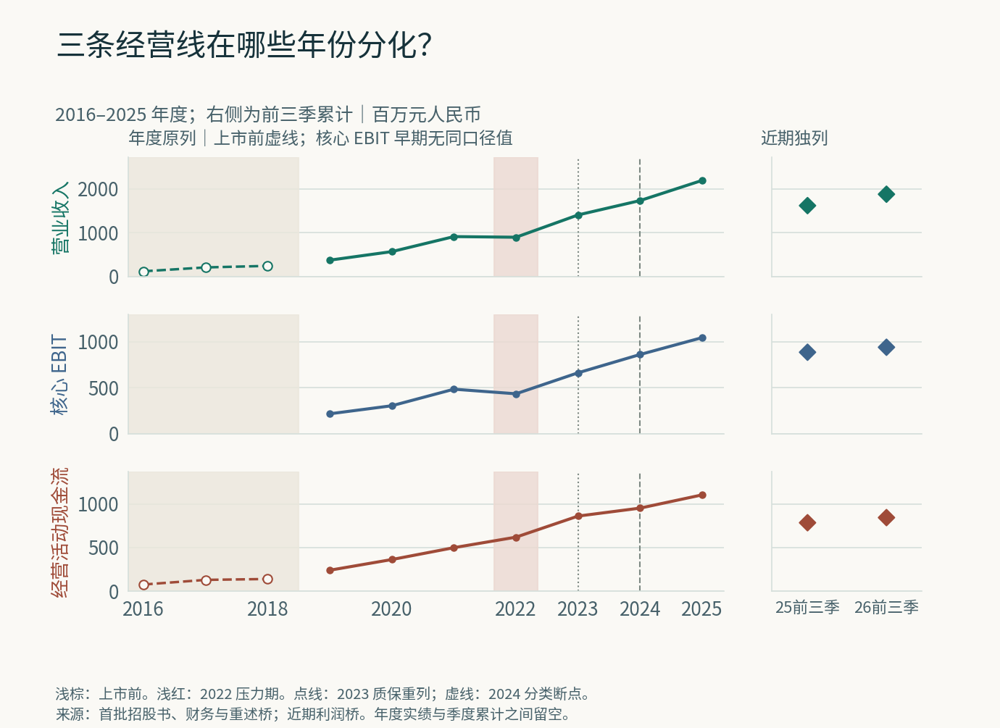
| 期间 | 合并收入 | 核心EBIT | CFO−购建 |
|---|---|---|---|
| 2019 | 376 | 218 | 127 |
| 2020 | 571 | 305 | 318 |
| 2021 | 913 | 484 | 335 |
| 2022 | 898 | 434 | 523 |
| 2023 | 1,407 | 662 | 709 |
| 2024 | 1,735 | 860 | 839 |
| 2025 | 2,196 | 1,043 | 1,069 |
右侧两点各为前三季累计。年度与累计之间留空，上市前缺同口径核心 EBIT 的年份也留空。
2022 压力｜利润下降，现金反而释放
2022 年营业收入回落 1.64%。核心 EBIT 同比降 10.29%，核心率从 53.00% 降为 48.33%。成本从 1.80 亿元升到 1.89 亿元，管理、研发等费用无法随收入减量等比例下降。若模型只观察早年扩张，就会把研发与服务能力误写成可按比例收缩的成本，低估压力年利润率的变化。后续预测为压力情景配置较低毛利、较高销售管理费率和更慢的周转。
同一时期 CFO 从 4.99 亿元增至 6.19 亿元，同时现金购建从 1.63 亿元降至 0.97 亿元，CFO−购建改善约 1.87 亿元。CFO 增量约 1.21 亿元、低购建约 0.67 亿元解释了变化。CFO 已含回款、经营应付、税款和其他现金的实际变化，因此不能再把期末贸易营运资本差一次性扣除。2022 到底是哪批订单的收款加快，需要更细的应收、税费和回款归属，未由此算术归因。
图表 10 2022年压力的两条线
| 合并指标 | 2021·百万元 | 2022·百万元 | 变化·百万元 |
|---|---|---|---|
| 收入 | 913.44 | 898.49 | -14.95 |
| 核心EBIT | 484.08 | 434.25 | -49.83 |
| 报表CFO | 498.73 | 619.28 | 120.55 |
| 现金购建 | 163.45 | 96.76 | -66.70 |
| CFO−购建 | 335.28 | 522.53 | 187.25 |
2023—2025｜增长由分组变化和硬件共同推动
2023 年合并收入回升至 14.07 亿元。收入分类仍按板卡、随动、总线、切割头和其他披露。2024 年改按平面、管材、三维和其他解决方案，直接把 2023 年总线挪进 2024 平面会把产品层与应用层混为一谈。2024 年报的可比分组同比与比较成本可以还原可用范围。本稿将舍入区间在主营收入约束下闭合，年度报告索引保留旧口径，预计组内变化不会携带虚假的精确位数。
2025 年合并收入为 21.96 亿元。控制销量增 6.67%，智能硬件增 61.81%，组价与份额明显发生变化。其他主营增长 1.46 亿元，占主营增量约三分之一。管材增长 1.07 亿元，三维增长 0.27 亿元，规模最多的仍是平面增长 1.68 亿元。组合向毛利更薄的组别移动，净效果要看组内价格、原料和履约。这一历史段说明企业可在不显著增加传统控制系统件数的情况下扩大单机方案收入。
图表 11 出货增速分化（套／件当量）
| 期间 | 控制系统 | 智能硬件 |
|---|---|---|
| 2024 | 60,993 | 35,118 |
| 2025 | 65,064 | 56,824 |
采用 2024 年报比较列的质保重列把 2023 年营业成本增加 4,426,692.62 元，并将同额从销售费用去掉。毛利变化时使用重列合计，核心 EBIT 保持同值，以免把核算政策变动当成成本效率。2025 年报又把 2024 主营成本性质中的 570.16 万元由制造费用移入原材料，主营成本合计不变。原披露和比较列持续并排。
2026｜将同口径季度接在历史上
2026 年中报和三季报都给累计列。分别计算 2026 年前三季减当年上半年，以及上年同期前三季减上年同期上半年，得到两条单独的第三季流量，再同三季报首页营业收入锚对。资产负债表期末金额不用累计相减计算单季收入，期末变化独立列入资金占用。如用周转天数，采用可比两点均值及对应 273 天，不能拿年末单时点除第三季单季成本。
转增节奏也影响比较。原 2025Q3 累计基本每股收益为 3.14 元，2026Q3 列报的 2025 累计比较值为 2.24 元；归母净利润以集团原金额独立对照。本报告对含权冻结日用 10 月登记后的 405,984,426 股。11 月 16 日派息在日期彼岸发生，11 月 10 日公告在冻结日前已知。11 月 20 日路演提供管理层解释，留在期后检验。
图表 12 年内累计与单季闭合
| 指标 | 2025Q3·百万元 | 2026Q3·百万元 | 2026前三季·百万元 |
|---|---|---|---|
| 收入 | 516.12 | 601.32 | 1,879.57 |
| 核心EBIT | 260.16 | 268.85 | 938.19 |
| 报告营业利润 | 295.38 | 342.03 | 1,226.03 |
| CFO−购建 | 225.76 | 331.61 | 821.19 |
选取各年披露时点时同时记录公告日、实际列、比较列及主体，避免以日后整理的 PDF 改早年的输入。报表年度指数可从单指标回到发行人原 PDF，项目线索在年报经营讨论、资本投入和适用的募集资金公告上交叉。近期判断以截至 10 月 27 日公告的最新财务期为锚，追踪截至研究日已查到的说明会及权益实施。
收入闭合｜产品、地区、渠道各走各的分母
合并收入包含主营和其他业务。2024 年主营约 17.18 亿元，合并 17.35 亿元。2025 年主营 21.67 亿元、其他业务 0.29 亿元，合并 21.96 亿元。主营是平面、管材、三维、其他四个组的合计。地区列以销售地归集，渠道列为主营直销，二者均将同一笔销售重新切分。把地区、应用和直销金额叠加会重复计算；把“其他主营”和“其他业务”当一个类别，也会把非主营的残差配给新项目。
2023 原产品表一笔主营业收入分随动、板卡、总线、切割头和其他。下一年开始，同样功能可因集成而不再表现为一套单列随动系统。旧分组与新分组都可独立闭合到主营但没有逐笔矩阵。本稿以 2024 可比同比反推 2023 收入范围，和原来财务报表核合计；2023 比较成本来自重列后的精确数。审阅可以下载四组范围，检查每项均在舍入分界内。
图表 13 按解决方案重组收入（百万元）
| 分组 | 2023桥接下限 | 2023闭合采用 | 2023桥接上限 | 2024 | 2025 |
|---|---|---|---|---|---|
| 平面解决方案 | 1,005.78 | 1,005.82 | 1,005.87 | 1,124.81 | 1,292.91 |
| 管材解决方案 | 275.14 | 275.15 | 275.16 | 380.23 | 487.45 |
| 三维解决方案 | 7.21 | 7.21 | 7.21 | 36.78 | 63.89 |
| 其他主营 | 107.71 | 107.71 | 107.71 | 176.05 | 322.39 |
地区、渠道和主营、其他的 48 项勾稽保留在首批。国内大区和海外直客及间接出口不能用相同分母。2025 华东约 15.52 亿元，相对 2024 的 12.29 亿元增加约 3.23 亿元；华中和华南由 3.89 至 4.59 亿元。其余三地含华北、东北及其他，2025 合计约 1.55 亿元。五区闭合到主营，直销也独立闭合至 21.67 亿元。地区与渠道的成本均可在勾稽表中独立追踪。按同公司披露的收货地计算出口代理，也只用于可比报表口径，不能认定终端设备去向。
营收驱动｜出货、价与结构各自解释什么
2019—2023 的历史产品数量与 2024—2025 的同名控制系统已发生变化。近两年同名控制出货为 60,993 和 65,064 套，智能硬件出货为 35,118 和 56,824 套。出货比由 57.58% 升至 87.34%。硬件可能单卖、补库存或替换，也可能一台整机需要多件。比值不能成为实际附着率。相应的集团组均金额约由 2.82 万元增至 3.33 万元，组件和整体方案共同变动使该商数不同于同 SKU 净价。
收入变化的会计逻辑是新机可服务量和替换需求先决定能投标的量，技术适配筛选机型，OEM 选择决定拿到多少，再看净价，扣折扣返利与退换。配套另按同订单附着的已验收量计，独卖从硬件桶补充。延迟交付或验收当期形成发出商品、应收或预收，直到满足收入条件。缺少同合同配套数时，出货比仅对锚的数量级提供约束，不能把模型的附着变动称为历史事实。
图表 14 2024→2025主营量与组价桥

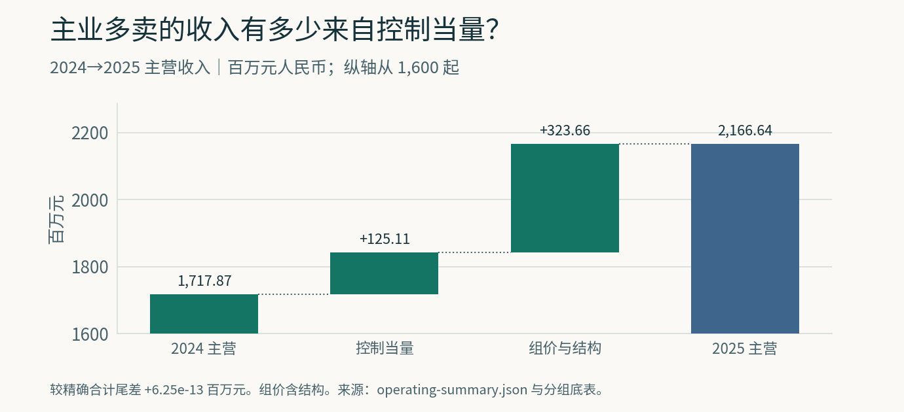
| 项目 | 增加·百万元 | 下一次核对 |
|---|---|---|
| 主营收入增量 | 448.77 | 四组收入和其他业务 |
| 控制当量所示量 | 125.11 | 同订单设备、控件和替换 |
| 组均实现与结构 | 323.66 | 同机型净价、退返、配套分布 |
2024→2025 以同名控制出货作为规模代理，原模型把主业收入变化中约 1.25 亿元归规模、其余约 3.24 亿元归组均金额和结构。解释后者需要每个机型功率、净价、地域、旧机替换及是否配切割头的明细。把 6.67% 控制量增长和 61.81% 硬件量增长都加到总收入回归，会把同订单多部件算成两次终端需求。
毛利桥｜毛利额增长，利润率被组合挤压
中点法把行业主营毛利率变化写成组权重变化乘两年毛利率均值，以及组毛利率变化乘两年权重均值。两项相加与总毛利率差相等，交互项均摊。2023 到 2024 使用 2024 年报的可比同比修复四组收入，到 2025 时两个完整实际列都可读。集团合并毛利率还受其他业务影响，所以图只说明主营分组，并非集团合计的贡献分解。
2024→2025 主营毛利率下滑约 2.61 个百分点，其中组权重约 −1.38，组内约 −1.23。平面、管材各自利润率承压，推高份额的其他主营仍低于三类解决方案毛利率。三维组收入增速高，绝对毛利只增加约 0.23 亿元。相较于把毛利全归因于硬件，公司看得见的是其他主营始终较薄、平面及管材组内也下降。没有同机型净价、直接材料和售后，就不能将组内变动唯一归因于价格折扣或产能利用率。
图表 15 主营毛利率中点贡献（百分点）

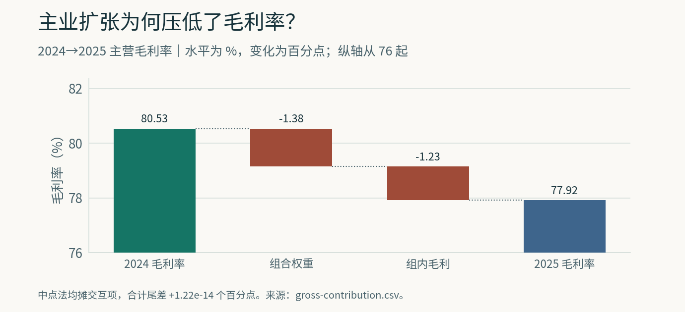
| 分组 | 23→24权重 | 23→24组内 | 24→25权重 | 24→25组内 |
|---|---|---|---|---|
| 平面解决方案 | -5.409 | +0.658 | -4.766 | -0.718 |
| 管材解决方案 | +2.133 | -0.209 | +0.313 | -0.701 |
| 三维解决方案 | +1.373 | -0.102 | +0.660 | +0.050 |
| 其他主营 | +1.241 | +0.452 | +2.412 | +0.138 |
| 合计 | -0.662 | +0.799 | -1.381 | -1.231 |
由 2023→2024 的比较看，组合分散先出现，组内改善一度能抵消一部分。下一年两个影响同向，增长模式的边际成本才更明显。预测给压力路径更高硬件占比影响及更低硬件毛利，给改善路径更高技术适配及回收效率。把当前分组权重固定到稳定期只保留在一项敏感性，不用于三条预测线的统一事实。
成本和费用｜哪些随销量，哪些随能力
2025 主营成本 4.7839 亿元，原材料 3.8270 亿元，人工 0.2748 亿元，制造 0.6433 亿元，运费约 0.0388 亿元。2024 同口径的材料为 2.6557 亿元、制造为 0.4855 亿元，原披露分别为 2.5987 和 0.5425 亿元。采购规模和更多硬件使原材料成为重要的成本驱动。自制部件可能降低材料支出占比却增加制造费和资本占用，不能仅以材料变化判定毛利是否改善。2025 实施行保留发行人空白或比较金额，使用已披露成本总额控制，不把推得的极小尾差作为新增成本。
保证类质保在 2023 比较中重列到营业成本。该政策影响 2023 的销售费用及毛利率，同额反向调整后不会改变正常化核心 EBIT。把历史毛利率用重列、销售费用却用原列，会重复扣质保。按项目判断未来服务费时，要先区分估计保修准备金、实付维修和超出保证范围的现场交付。模型另扣的新增服务率属于条件，对应集团销售费用之外的边际负担，不视作已经在年报拆开的实际支出。
图表 16 材料、人工与制造的比较桥
| 性质 | 2023重列·百万元 | 2024原列 | 2024次年比较 | 2025 |
|---|---|---|---|---|
| 原材料 | 231.38 | 259.87 | 265.57 | 382.70 |
| 人工 | 13.54 | 18.16 | 18.16 | 27.48 |
| 制造 | 26.73 | 54.25 | 48.55 | 64.33 |
| 运输 | 1.81 | 2.16 | 2.16 | 3.88 |
| 实施 | 0.22 | 0.00 | 0.00 | — |
| 2025其余直接成本合计 | — | — | — | 0.00 |
2025 年集团销售、管理、研发分别约 1.37、1.56、3.41 亿元。研发提供控制算法与工艺库，有复用的可能，同时会占用尤其是新应用验证的人时。模型以各费用金额占组后收入或硬件收入计算，调稳定核心利润率时把增量作为独立经营节约。另设一项税金及附加，避免购建或税后模型再次计算同一项。
2026Q3｜为何四个指标给了四个读数
第三季合并营业收入从 5.1612 增至 6.0132 亿元，营业成本从 1.2119 增至 1.7581 亿元，毛利只增加 3,058.18 万元。毛利率从 76.52% 降至 70.76%，下降约 5.76 个百分点。销售费增加约 225.41 万元，管理约 1,061.24 万元，研发约 884.64 万元，税附约 17.59 万元。扣除后核心 EBIT 从 2.6016 增至 2.6885 亿元，增加约 869.30 万元。
报表营业利润单季从 2.9538 升至 3.4203 亿元。核心以外的净增约 3,795.58 万元，其中其他收益增加约 4,294.77 万元。负财务费用的正贡献缩小约 265.23 万元，投资收益减少约 176.61 万元，公允价值变动下降约 285.95 万元，信用减值回转相对同期增加约 228.90 万元。所得税费用单季变动不大，营业外支出下降，得到集团净利约 3.1636 亿元，扣少数损益约 304.67 万元后为归母约 3.1331 亿元。形成了比核心 EBIT 更快的股东利润增长。
图表 17 2026Q3带来的利润变化

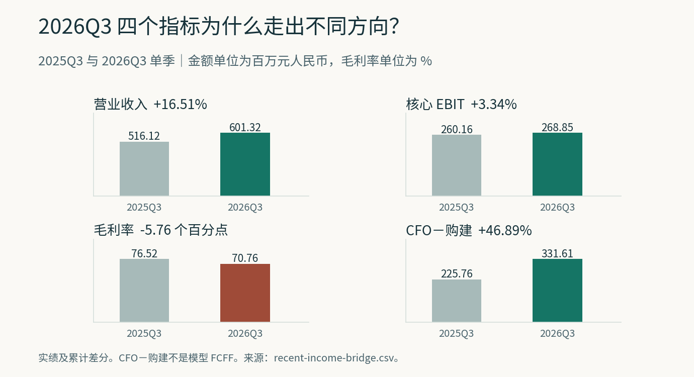
| 核心桥（百万元） | 2025Q3 | 2026Q3 | 绝对变动 |
|---|---|---|---|
| 收入 | 516.12 | 601.32 | 85.20 |
| 成本 | 121.19 | 175.81 | 54.62 |
| 毛利 | 394.92 | 425.51 | 30.58 |
| 核心营业利润 | 260.16 | 268.85 | 8.69 |
| 其他收益 | 2.05 | 45.00 | 42.95 |
| 报告营业利润 | 295.38 | 342.03 | 46.65 |
| 归母 | 264.20 | 313.31 | 49.12 |
四个小图各用自己的纵轴。收入、核心 EBIT 与现金按同比百分比读，毛利率按百分点读。
扣非归母 3.0212 亿元，同比 +20.83%。法定扣非用发行人的非经常性损益规则，研发、售后等费用正常扣除，某些政策或经营性收益可以与本模型的正常化范围不同。季度页面不能把所有其他收益对应到单项，也不能从“扣非”反推出与模型相同的核心现金。把公允价值和理财另归证券价值是为了防止重复增加股权两次。
净利润、净价与现金预测的分界
核心 EBIT 定义为收入扣营业成本、税金附加、销售、管理及研发。报表营业利润比它再计财务费用、其他收益、投资、公允、减值与处置。负财务费用是收益贡献，利息收入是其子项，不额外加第二次。2026 前三季报告营业利润约 12.2603 亿元、核心约 9.3819 亿元。利息 0.9106 亿元随资金规模、利率及期限变化。基准将资金收益放在金融资产的价值一侧，其他收益里能证明稳定且来源于经营的部分，可以在下一轮进入现金税后经营收益。
营业利润与利润总额之间加营业外收入、扣营业外支出，利润总额扣所得税费用得合并净利，扣少数股东损益得归母。EPS 的证券分母又受到转增、激励和期间加权影响。用同日登记总股数折算每股价值是把经营价值归给该日股份，而会计 EPS 用的是期间加权平均股数。2026 归母和每股利润的条件估算缺未来金融利息、少数股权利润和税率可核依据，稿中只给净利润的实际与经营 NOPAT 路径。
图表 18 从销售到归母的口径链
2025 解决方案增长既可由更多有效设备带来，也可由配套价格和交付内容扩大带来。未来通过同机型报价复核毛利时，采购返利应减去有效价格，折扣先从单机毛利扣除，非约定售后再从向股东可留下的现金扣除。只有这些字段在同一份订单验收与收款链上匹配，才能说某季度配套提升了单位经济利益。
三条现金线｜报表流量、估值流量和股东现金
CFO 是报表期内实际收到和付出的经营现金，销售收款含税且可能来自以前期订单，支付端含应付结算、管理与研发现金、税费、押金等。CFO−购建把集团当期的经营现金减去购买固定、无形及其他长期资产的现金。估值 FCFF 从核心 EBIT 开始，乘经营税后率，加适用折旧摊销，减经营资本增加、现金资本开支和另列租赁。公司向股东分派或用于回购的现金属于权益流出。正的 FCFF 可以增加全部资本的价值，股东真正收到还受留存、债务与分配决策约束。
2025 CFO 约 11.04 亿元，减购建后约 10.69 亿元。在统一的窄贸易资本、历史折旧和 13% 经营税代理下，历史 FCFF 约 8.20 亿元，差约 2.49 亿元。差额包含经营与金融科目、现金财政收益、非贸易营运项目、收付时点及其他定义。不能用净利或财务利润填平。2025 所得税费用和现金流表支付各项税费应并列。后者包括多类税，不能除以利润总额作为所得税率。
图表 19 历史现金回收的三种尺度
| 年度 | CFO·百万元 | CFO−购建 | 经营FCFF代理 | 差额 |
|---|---|---|---|---|
| 2019 | 239.90 | 126.62 | 69.11 | -57.51 |
| 2020 | 362.47 | 317.56 | 201.54 | -116.02 |
| 2021 | 498.73 | 335.28 | 186.38 | -148.91 |
| 2022 | 619.28 | 522.53 | 304.65 | -217.88 |
| 2023 | 860.94 | 709.42 | 373.02 | -336.40 |
| 2024 | 952.44 | 839.23 | 621.75 | -217.48 |
| 2025 | 1,104.32 | 1,069.12 | 819.82 | -249.30 |
租赁在模型按净租金代理单列，历史 D&A 与实际租赁现金的重合范围保留。财务性质租赁扣债、经营支出扣 FCFF，具体合同和账龄带来的双扣风险按附注继续核。研发在核心 EBIT 已费用化，不能再作为当期现金资本开支扣一次。历史费用化研发资本若要恢复，应以分业务寿命和摊销重构投资资本，同时回调 NOPAT，否则两个比率无法比较。
2022 和 2026 的现金改善不走同一条路
2022 年 CFO 增加 1.21 亿元，购建减少 0.67 亿元。即使核心利润减少约 0.50 亿元，CFO−购建仍增至 5.23 亿元。2026 年单季 CFO−购建从约 2.26 亿元增至 3.32 亿元，增长约 46.89%。三季累计则从 7.61 亿元升至 8.21 亿元，增约 7.88%。第三季的较快节奏部分抵消上半年偏弱，不能把单季增速推广成全年。
前三季销售商品、提供劳务收到的现金增加约 2.72 亿元，税费返还增加约 0.46 亿元，其他经营收现增加约 1.14 亿元。另一方面，买商品和接受劳务的付款多约 2.22 亿元，职工付现多约 0.98 亿元，税费与其他付款共增加约 0.53 亿元，合计得到经营净现金增量 0.5880 亿元。购建减少约 117.70 万元，构成前三季 CFO−购建增量的其余部分。增长主要来自收现和其他经营流入，购建下降不是这次的主要原因。
图表 20 前三季现金流同比贡献
| 现金流量单项 | 2025·百万元 | 2026·百万元 | 对CFO变化 |
|---|---|---|---|
| 销售商品、提供劳务收到的现金 | 1,635.90 | 1,907.68 | 271.78 |
| 收到的税费返还 | 55.67 | 101.67 | 46.00 |
| 收到其他与经营活动有关的现金 | 60.60 | 174.85 | 114.24 |
| 购买商品、接受劳务支付的现金 | 238.70 | 460.95 | -222.24 |
| 支付给职工及为职工支付的现金 | 374.63 | 473.02 | -98.39 |
| 支付的各项税费 | 267.64 | 287.31 | -19.66 |
| 支付其他与经营活动有关的现金 | 86.59 | 119.52 | -32.93 |
销售收现含不同交货期、预收和税，变化仍应与对客户集中度、融资条件和开票账龄核对。单季 CFO 增而期末又有不少备货，说明同季的付款与回款同时变化。若把所有现金改善归给配套产品，可能把返税、其他款或不同客户的前期应收并到新增硬件。预测使用经营现金税率及各组营运资本，报表现金改善作为检验而非自动上调。
库存怎样改变经济性
以应收账款加存货减应付账款，2025 年 9 月末约 2.9754 亿元，2026 年 6 月末约 4.3697 亿元，9 月末约 4.7116 亿元。较上年 9 月，贸易窄占款增约 1.7362 亿元。6 月到 9 月，应收减少约 0.47 亿元，应付减少约 0.04 亿元，存货增加约 0.77 亿元。即使回款改善，库存在相同窗口依然提高了生产和安全库存的资金承诺。三季报 p7 合同负债约 1.5099 亿元，较 2025 年末 1.3239 亿元增加约 0.1860 亿元。预收能抵消部分占款，但实物验收和应收没有交叉归到同一订单。
用各年年初期末平均库存除各年同期成本，再乘 273 天，2025→2026 前三季由约 146.58 天升到 175.22 天。应收天数约由 22.56 至 24.85，应付约由 39.55 至 50.05。进货与成本范围不同，用成本估应付天数只是统一的代理，精确 DPO 应连接净采购和存货组成。半年度与三季度采用各自匹配的累计天数，图中存货和合同负债保留不同定义。
图表 21 贸易营运资本分项
| 期末 | 应收·百万元 | 存货 | 应付 | 净贸易占款 |
|---|---|---|---|---|
| 2025-YTD9 | 144.22 | 216.23 | 62.90 | 297.54 |
| 2026-H1 | 222.03 | 326.23 | 111.29 | 436.97 |
| 2026-YTD9 | 174.76 | 403.39 | 107.00 | 471.16 |
库存有价值要满足后续交付速度、订单覆盖和未减值的条件。对原材料、在制、成品、发出商品分别索取金额、库龄和订单可撤销期，明确其中多少已获预付款，多少与潜在换机和试验直接相关。若第一批回款下降，同时库存天数和应付天数升高，账面负债缓冲不能弥补未来坏账或折价。若见管理层所说安全库存释放、原材料降龄，现金桥的稳定营运资本假设才有向好证据。
投入资本回报｜高存量回报和负增量可以并存
本稿窄经营资本使用净贸易资本、固定资产以及可提取的在建资产，不把金融资产计进经营，也不将所有研发资本化。因此 2022 平均资本约 3.64 亿元、经营 NOPAT 代理约 3.78 亿元，平均 ROIC 代理超过 100%。同年 NOPAT 较上年减少约 0.43 亿元、资本增加约 0.77 亿元，当期窄增量回报约 −56%。存量历史功能和新项目的回报完全可能方向相反。2025 代理的高值也受窄分母和购建回落影响，不能据此把长期新增 ROIC 设成同样高。
在建维持到项目转固，现金采购可先发生，产能交付和验收在后。普通维修影响费用或维护资本，扩产对应可辨识设备及工艺的增加，技改和一次性的现场配套项目需按付款和成熟期分开。披露的募投资金累计投入只是资金用途之一，也可能与研发或产业化有共用。剩余维护/扩产拆分和每一项目真实资本回报由资产卡和项目付款节点补齐。估值基准采用 23.5% 稳定增量回报，压力 14%、改善 32%，它们反映对新资本效率的条件假设。
图表 22 窄口径历史资本与回报
| 年度 | 平均经营资本·百万元 | NOPAT代理 | 平均ROIC | 增量ROIC |
|---|---|---|---|---|
| 2019 | — | 189.39 | — | — |
| 2020 | 92.67 | 265.26 | 286.24% | 81.59% |
| 2021 | 232.09 | 421.15 | 181.46% | 83.87% |
| 2022 | 363.67 | 377.80 | 103.88% | -56.08% |
| 2023 | 503.27 | 575.80 | 114.41% | 98.08% |
| 2024 | 650.80 | 748.23 | 114.97% | 185.04% |
| 2025 | 740.84 | 907.15 | 122.45% | 182.90% |
稳定期要求再投资 NOPAT 的比例等于长期增速除以新增 ROIC。保持同样长期增速时，增量效率越低，越多现金要留在经营，不宜以 2025 极低购建率外推。2027—2029 项目购建按情景独立提出，2031—2035 净再投资向终值纪律靠拢。只要延期、共用产能或维修性质变化证据出现，就更新付款曲线及回报，不把募投预算全额放入同一年。
配套净现金｜每 100 元多卖出来的条件
应在同 OEM、同机型或同批次比较只卖控制与控制加硬件。净成交额含折扣返利、非标安装和有效退换。扣硬件成本、单机控制组让利、预计适配和服务、经营所得税，再扣首批存货、应收减应付及必要购建。第一批建立贸易资本通常产生一次性现金占用，重复订单对 FCFF 只扣占用余额的变化。对相同客户的基准比较不把全公司原有销售费或回款当新增配套收益。
用条件试算，每 100 元增量硬件净收入，硬件毛利率 50%，安装 4 元、控制组让利 2 元、现金税率 13%，首批购建 3 元，应付 50 天。库存 110 天、应收 45 天时，需要占用约 20.55 元，若售后 5 元，首批留下约 10.38 元。库存 150 天、应收 65 天时，占款约 31.51 元，首批约 −0.58 元，售后即使只花 5 元也会吃掉首批全部现金。使现金转正的售后上限约 4.34 元。这个变化可以在毛利率相同下出现。
图表 23 50%硬件毛利时的首批现金敏感性

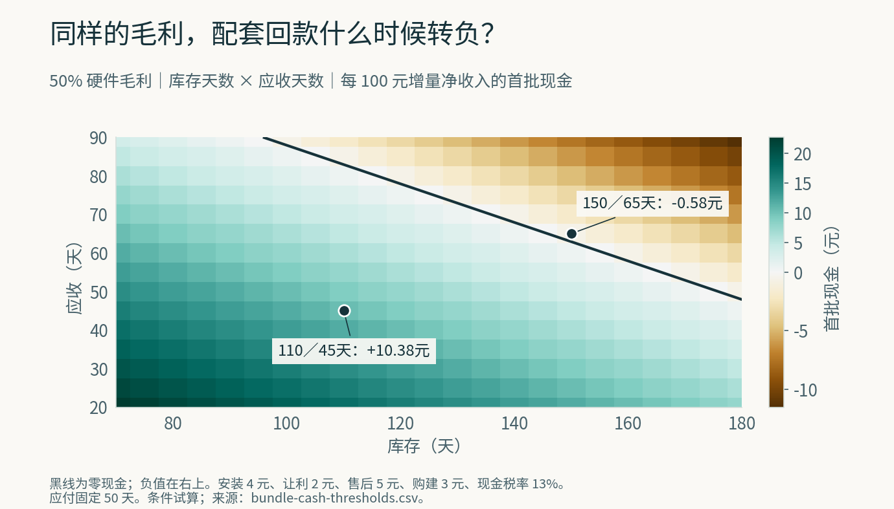
| 库存／应收天 | 首批占款·元 | 服务5元后现金 | 售后上限 |
|---|---|---|---|
| 150／65 | 31.51 | -0.58 | 4.34 |
| 110／45 | 20.55 | 10.38 | 16.93 |
| 85／29 | 12.74 | 18.19 | 25.91 |
热力图固定 50% 硬件毛利率。黑线给出首批现金为零的库存、应收组合；两处原试算并入同一网格。
要把条件升级为经营解释，索取同样功率、用途和保修期的两类小票价，核记录的物料入库、终端验收回执、退货及发票对应的回款天数。渠道若延长付费周期但用预付款抵消，应沿同一条订单净算一次。在市场价反推中，库存天数和增量售后同时变化，读者可观察组合升量是否需要更厚的稳定经营毛利协同才值回价格。
从能加工到能回款｜四项业务共用同一验收规则
四项业务按可服务需求、适配验证、订单、现场交付验收、回款与资本回报六层判断。切割头已经有可证产品销售，但智能硬件整体出货不是其单项销量，合并披露也不能识别贴到系统的比例。弧焊从工艺、视觉和控制走向机器人集成，免示教可减少单件编程，仍需在复杂来料、装夹和成批切换时检验。锂电激光焊接依赖电池线的良率、在线检测与验收周期，项目规划本身说明公司愿投入，尚不能给客户数。精密微加工存在可证产品规格，应用在皮秒、飞秒等超快激光，但仍需要客户设备能稳定验收及重复回款。
图表 24 项目进入基准要逐层通过

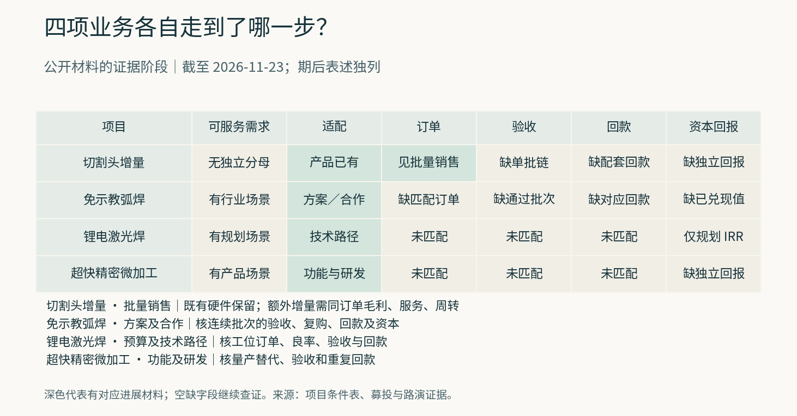
进展矩阵按披露填列，保留尚缺批次订单、匹配验收和回款的格子。项目条件规模见分项目核对表。
规模按明确的条件订单数乘价格算区间，既没有可靠可服务分母，也没有条件发生概率，所以它是模型旁的门槛表。例为锂电激光焊一次接手 20～160 个工位，每单位净价 11 万元，对应 220 万～1,760 万元收入。这个数只是用来问足够规模能否在占款和购建之后留现金，不能替代项目预算、市场总可服务量或实际成交。切割头增量仍留在硬件桶，其他三个新项目净新增在三条主路径中均为零，已在历史财报中的非辨认可比收入由残余组保留。
切割头募投修正｜不能把首发批次称为全项目
首发批次承诺募集资金 2.183967 亿元，累计投入 0.184063 亿元。再融资批次承诺 3.701219 亿元，累计投入 1.493854 亿元。两批汇总募集承诺 5.885186 亿元，累计 1.677917 亿元。全项目原总投资 6.183967 亿元，与募集承诺差 0.298781 亿元。按同一承诺分母累计投入占约 28.51%。不能把首发比例当全项目，更不能用全项目实际资金除智能硬件总销量得到每套资本消耗。
结项公告同时披露原智能焊接机器人及控制系统产业化项目，首发 1.068286 亿元、投入 0.083274 亿元，再融资承诺 2.941366 亿元、投入 0.464497 亿元。截至公告基准日，两原项目合计实际约 2.225688 亿元，公告计划投资调至 2.225689 亿元，差 0.01 万元为汇总尾差。资金结项和设备产能实际兑现是两个计量阶段。需将设备交付能力、良率、订单和回款对接到承诺项目，而不能因资金使用率低就称资本回报高。
图表 25 切割头支出范围（万元）
| 取数范围 | 原项目投资 | 募集承诺 | 已投入募集资金 | 物理页 |
|---|---|---|---|---|
| 计划与累计支出 | 61839.67 | 58851.86 | 16779.17 | 6 |
| 首发资金 | 61839.67 | 21839.67 | 1840.63 | 9 |
| 再融资资金 | 61839.67 | 37012.19 | 14938.54 | 10 |
节余转投新建研发中心二期、智能产线机器人和锂电焊接智能方案，使用专户。与本次结项并行的超高精密驱控一体在基本达到研发目标后也有永久补流。2026H1 募资专项说明年内合计永久补充流动资金约 1.640624 亿元，来源包括多项原募集项目，不能都分配给切割头。后续按项目专户、实施协议、共用设备和出入库凭证核各路资金。
焊接和精密加工｜什么证据才能纳入现金预测
新研发中心二期由上海柏楚电子实施，预算约 1.6720 亿元。智能产线机器人及锂电焊接项目涉及柏楚电子和柏楚数控，产业化预算分别为 4.84393 亿元和 2.492646 亿元，建设期均延至 2028 年底。前者管理层测算税后 IRR 26.93%、达产盈亏平衡利用率 41.97%，后者分别为 10.38% 和 60.31%。这三组预算和集团目前的现金购建、财务资产并非同一概念。净回报应在项目主体与共用产能的费用、资金和资本归属明确后计算。
免示教弧焊的可核台账需要给出工件品类、现场调试、订单和重复产线、产线通过率与客户付款节点。锂电激光焊更需识别是工位控制、传感、焊头、设备还是一套整线购买。精密微加工可先用公司产品料号证明规格，再核买的是试样还是标配生产。任一试点退出条件都应最少注明生产良率和重复订单，未过关或服务条款持续加码需要下修挂账业务规模及回款天数。
图表 26 条件规模与首批现金区间
| 项目 | 条件台数／工位 | 条件营收·百万元 | 剔专用购建首批现金·百万元 |
|---|---|---|---|
| 切割头增量 | 3000–10000 | 13.50–45.00 | 0.95–3.16 |
| 免示教弧焊 | 50–400 | 2.50–20.00 | -0.04–-0.29 |
| 锂电激光焊 | 20–160 | 2.20–17.60 | -0.10–-0.82 |
| 超快精密微加工 | 100–700 | 3.50–24.50 | 0.25–1.72 |
自估值日起的项目增量购建只在模型假设的年度发生。分公司或子公司的总投入和集团已发生投入要相抵，防止一次增资被算为集团对外购建。若取得合同及验收，可以将合同净价 × 可归属工位× 概率区分成确认的已验收收入和情景订单，经营资金由同工位现金账龄驱动，再比较资本回报是否能覆盖 WACC。
海外和 11 月 20 日路演｜把线索留给下一次检验
海外业务有两种不同账。直接海外客户由柏楚确认产品收入并承担交付、币种和当地服务；国内 OEM 装配后销往海外时，柏楚的直接客户仍是国内设备厂，产品收入已经在原销售统计。应按订单号、设备序列及终端去向去重。将目的地海外的设备数量按整机终端价格乘一次，再加上国内同单销售，集团两次拿到一份收入。验证分母应是相同汇率、结算条款和销售地点的设备或收入。
11 月 20 日说明会排在估值窗口之后。转录中管理层对高功率表示收入和份额随产品发展提高，也在征集问答称方案份额保持稳定，未给可复算时段和分母。配套回答强调方案与应用扩张，未给附着率上限。船舶焊接及流程回答给出合作和能力方向，未披露设备交付、验收和回款。关于存货，公司解释前置备货可保障连续交付与防范供应链中断。Q&A 中提问人引用的同比、环比和产业归因，不能替代原表。
图表 27 路演期后答复及下一步
| 议题 | 可回读管理层答复 | 需要的披露 |
|---|---|---|
| 高功率 | 收入和市场地位表述，未给分母 | 按功率段、地区及OEM装机 |
| 配套 | 丰富方案，未给实际附着及上限 | 同订单硬件附着与净价 |
| 船舶焊接 | 设备厂合作、方案方向 | 订单有效期、验收与收款 |
| 备货 | 前置安全库存与供应韧性 | 积压年龄、订单覆盖及扣退货现金 |
从路演原地址可定位会议，本次原站未成功返回页面，使用可回读的双语转录核对会议标题、问号和答复。转录主持词提到 10 月 30 日三季报，与发行人原表公告日期 10 月 27 日冲突，后者用于所有模型账。备货解释的验收为订单覆盖、库存年龄、履约后收到现金与旧库存售出。未通过时应降低资本转速、降低附着净贡献，基准未把这条会后解释当已经验证。
从可服务设备到控制量｜每台只进一个池
新机池从可服务整机量开始。适配比例筛选已具备工艺、接口和现场服务条件的机型，取得份额再筛选采购结果。存量池只计可替换且会重新采购的设备，先按过去出货形成折算存量，再除假设置换周期，乘同机型续购概率。新机不进存量池，OEM 海外直销另做地理标签，不再加一遍。控制量等于两个不重复分支之和。历史 2025 总控制销量 65,064 套限制归一化规模，而分项各自缺客户分母。
模型采用可服务池归一化 10 万、适配 80%、取得 61%，另将既有出货折成年流量的 3.2 倍存量暴露，再除 8 年并以续购约束。示例并非行业统计，调整基准时应尽量让两个池分别受到客户数据约束。新增型号、认证、替换周期与维护故障是可独立检验的含义。将已经替换完的机型再乘同机型续购一次会重复加量。若品牌份额保持但设备景气转弱，训练数据中的高增不能提供额外量。
图表 28 每台设备只经过一个控制订单池

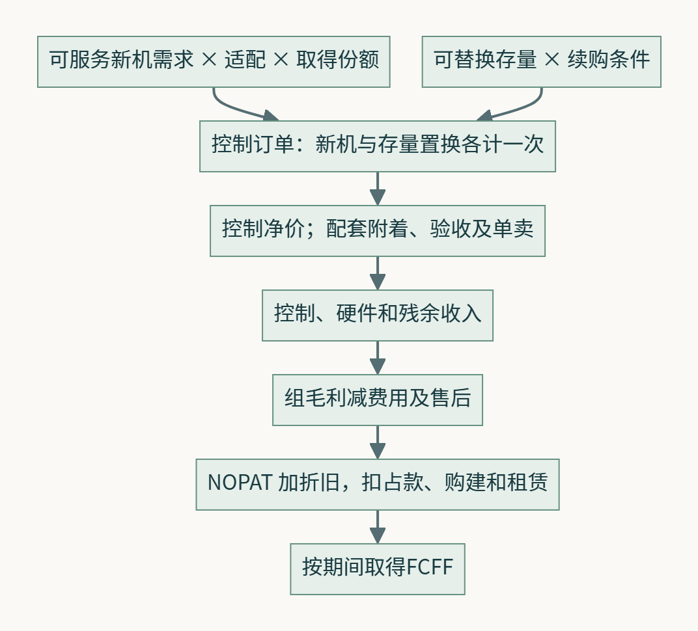
基准假设再可服务候选新机年增 6.4%，可适配比例和取得份额小幅拓宽，存量续购条件取 63.4%。压力把候选增长放慢至 2.8%，取得变化转弱且续购 56%；改善则为 9.4% 与 69%。这些值由历史主要在 2022 下行、2025 同名系统只增 6.67% 和 2026 组合扩张共同约束，不外推早年合并营收同比。
从控制量到验收净额｜价和硬件各算一次
单机控制量先乘组均净价。当量的历史收入来自平面、管材、三维三组，可观察到同名系统数量但组内有混合单。硬件收入只从其他主营估算一块锚，基准占该组 80%，剩余主营及其他业务进入残余。应用方案里可能还有硬件，报告按既有合并收入总额避免重复加入同一组。未来如能拆同一机型的定制硬件，重新归类组价及物料，不直接增加合计。
历史硬件出货 56,824，模型用归一化附着 55% 乘控制量得到配套计划，差额作单卖基数。未来先将当期计划按验收比例转已验收，迟延的一期以后接回，只有验收或合同政策满足才计收入。基准采用 97.5% 当期验收、净售价条件 +1.4%（控制组当量）和 +0.4%（硬件当量）。验收延期与售后费用分开，避免用费率反推客户是否验收。新增研报中潜在项目如已在既有合并收入，仍留在原残余，只有增强的可识别贡献才加新业务。
图表 29 基准前四年控制与硬件量
| 年度 | 新机当量 | 换机当量 | 配套接受 | 单卖硬件 | 控制组价·元 |
|---|---|---|---|---|---|
| 2027 | 55,900 | 17,643 | 43,023 | 25,134 | 29,461 |
| 2028 | 60,067 | 18,651 | 49,071 | 27,471 | 29,873 |
| 2029 | 64,540 | 19,963 | 54,784 | 30,026 | 30,291 |
| 2030 | 69,343 | 21,430 | 61,113 | 32,819 | 30,715 |
2026 前三季未披露同模型分组量价，利用 YTD 合并实际和模型 Q4 闭合两类代理收入后得到 2026 残余。基准从旧锚向该差额保留 75%，其余暂按旧组价和规模走。压力保留 45%，改善 85%。保留率较高也可能让毛利率较低的残余占比上升。本行先承认观测不到的范围，再将能在年报中核对的变动留作测试项。
2026Q4｜以季节和最新报表截点组成全年
2025 年合并全年营收 21.9563 亿元，前三季 16.1960 亿元，差得 Q4 5.7604 亿元，约占全年 26.24%。按该季占比为单位的季度基准，基准 Q4 约 1.80 万套控制当量、组价约 2.91 万元，以及约 1.64 万件硬件当量，得到收入 6.23 亿元，核心 EBIT 3.00 亿元。已披露 2026 前三季收入 18.7957 亿元、核心 9.3819 亿元保持原金额，和第四季相加才得全年业务。厚板和配套需求强时改善验收与折扣，弱时允许季度低于上年。Q4 产品数与组价是条件，加总到披露时仍需核物理产品区间。
图表 30 2026Q4预测与前三季保持隔离
| 路径 | Q4控制量 | 组价·元 | Q4收入·百万元 | Q4核心EBIT | 估值桩段折现 |
|---|---|---|---|---|---|
| 压力 | 16,819 | 27,353 | 553.44 | 228.41 | 99.47 |
| 基准 | 17,977 | 29,054 | 623.42 | 300.44 | 155.01 |
| 改善 | 19,012 | 30,613 | 689.33 | 366.22 | 202.03 |
估值取 11 月 12 日收盘后的现金。完整四季度模型用该季 NOPAT 加折旧代理、减购建、租赁及相对 9 月末贸易营运余额的变化。财政日历从 11 月 12 日到年末 49 日，按 49/92 近似进入估值，距基准 49/365 年折现。按天摊是均匀收现条件，若项目现金集中在最后一周，精细化应改用分合同支付时点。全年的估计 FCFF 供经营分析，前九个月实际现金不再进入企业现值。
基准 2026 年末贸易资本向长期条件部分回落，之后再降低到 2027 稳态中转。模型数说明如果库存安全储备不释放，应降低估值；2027 现金受释放帮助，2028 虽利润增长，资本起点上升会限制同比现金增量。该路径依赖后续报表，优先对年末库龄、预收和应付款配对。
三条经营路径｜收入先变，现金靠兑现
基准 2027—2030 控制量由约 73,544 套逐步到 90,773 套。应用收入接受力量与控制组价，硬件随附着增加，组内和组合毛利按三组不同假设算。核心 EBIT 扣销售、管理、研发、税附和增量服务，不因多数收入落在其他组而统一套高软件毛利。2027 毛利与现金改善并不全来自销量，包含库存从三季高位回归和付款节奏。稳定期收益贡献更高，要检查资本支出是否支持下一轮增长。
图表 31 三情景逐年现金（百万元）

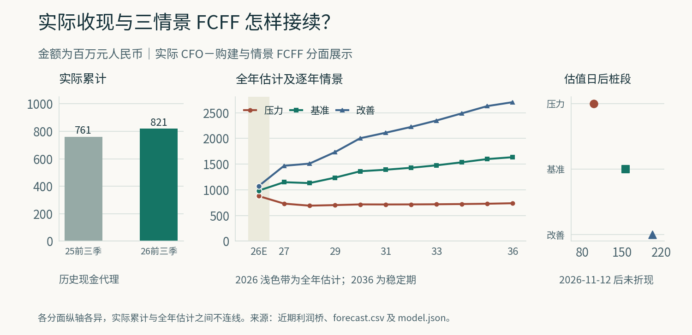
| 期间 | 压力收入 | 压力FCFF | 基准收入 | 基准FCFF | 改善收入 | 改善FCFF |
|---|---|---|---|---|---|---|
| 2026 | 2,433.01 | 877.88 | 2,502.99 | 983.11 | 2,568.90 | 1,072.18 |
| 2027 | 2,237.30 | 730.40 | 2,669.56 | 1,147.34 | 2,970.98 | 1,466.71 |
| 2028 | 2,254.29 | 690.58 | 2,909.88 | 1,129.77 | 3,414.10 | 1,508.95 |
| 2029 | 2,269.36 | 701.52 | 3,174.54 | 1,235.24 | 3,918.48 | 1,731.44 |
| 2030 | 2,286.81 | 715.19 | 3,465.12 | 1,360.56 | 4,495.82 | 2,003.67 |
| 2035 | 2,414.34 | 728.31 | 4,346.06 | 1,597.58 | 6,259.19 | 2,628.89 |
| 2036 | 2,445.72 | 737.77 | 4,446.02 | 1,634.32 | 6,440.70 | 2,705.13 |
左侧是实际 CFO－购建，中间是全年估计和逐年 FCFF，右侧是估值日后未折现桩段。三个分面保留各自的期间和现金口径。
压力路径更少的订单适配和替换、更大的折扣、更低硬件毛利、更慢周转和更高维护与项目支出；改善路径具备更高净价、同订单附着及验收和较低现金成本。2026–2035 三条逐年底表包括各项费用、财务前的所得税代理、折旧、贸易资本、现金购建和 FCFF。2035 收入以稳定增速对照，2036 终端资本留存收敛至稳定条件。财务收益、其他收益以及分部少数净利另归桥，EPS 不用估值日股数替代未披露期间加权股本。
只要同机型回款加快且合格率持稳，改善参数可先用于库存与边际服务；单见增销无需同时把续购、售价、收入全上调。反之如果延期验收、库存变老且毛利下降，应先切压力的应收和服务，避免待销售折价完全显现才下修。
年报留出｜高增长外推何时失效
按先前最新已发布年报固定历史窗口，每次用相邻两次同比的中位数预测次年，并用“原规模持平”作朴素对照。2022 留出冻结在 2022-04-15，输入 2019—2021 三份首次年报，得到收入预测约 14.24 亿元，实际 8.98 亿元，误差 +58.50%。扩大期两年同比将景气、份额和其他价格共同送入外推，遇 2022 回撤即失效。持平条件误差仅 +1.66%，提供了对压力预测的尺度观察。
2023 从 2020—2022 年开头，训练含一个低谷，预测 11.61 亿元、实际 14.07 亿元，误差 −17.51%。2024 从 2021—2023 的收入恢复，误差 +3.37%，但不能区分 2024 新应用分组和实际获单的贡献。2025 从 2022—2024 训练，误差 +10.64%。另外，以 2024 同名销量同比直接外推 2025 控制系统，旧留出误差 −16.41%，因为随动集成引起了单位断点。模型不使用历史合并增速作为等值控制台数变化。
图表 32 封存原财年后的留出误差
| 目标年 | 截止日 | 预测百万元 | 实际百万元 | 误差 |
|---|---|---|---|---|
| 2022 | 2022-04-15 | 1,424.09 | 898.49 | +58.50% |
| 2023 | 2023-04-11 | 1,160.78 | 1,407.11 | -17.51% |
| 2024 | 2024-03-20 | 1,793.87 | 1,735.46 | +3.37% |
| 2025 | 2025-04-03 | 2,429.14 | 2,195.63 | +10.64% |
这四次均为按历史截止重构的留出，年份与来源 ID 记录在底表，首个预测值由截至当年已公开且可复算的数据得出。用历史测试发现哪些解释会失效后，新模型用适配、验收和周转分开表达，将每次季报新增的数据落到有明确旧定义的行。不能按回测结果事后替换训练窗口，再将偏差改善称作独立验证。
券商反例｜集团预测接近，分项仍会错得很远
浙商 2023-10 的财务表给 2025 收入 23.14 亿元，正文写 23.10 亿元，对最终 21.9563231292 亿元分别高估约 5.391052% 和 5.208872%。原报告用随动、板卡、总线和其他分类，不能无误映射为 2025 应用解决方案，只回测集团和有明确定义的归母。华创 2025-04-08 给 21.45 亿元，低估 2.306047%，三维收入却预报 1.40 亿元，对实际 0.6389 亿元高估 119.12%。平面低估约 0.64 亿元，管材高约 0.24 亿元。总偏差不大说明组内方向可以互相抵销，模型需单列延迟和终端应用。
华创图 49 页注亿元，三维 2025E 成本原印 2795.03。按印值亿元毛利失真。仅将该格按万元折算，成本 0.279503 亿元、毛利率约 80.04%，与印列 80% 接近。平面 2.21、管材 0.66、其他 1.27、条件三维 0.279503，合计 4.419503 亿元，距表列集团 4.43 亿元尚差 0.010497 亿元。该差可能来自舍入和范围，保留原值，待券商底表，严禁用换算后的单位当公司实际原数。
图表 33 同年集团与分业务外部留出
| 预测口径 | 预计·百万元 | 实际·百万元 | 误差 |
|---|---|---|---|
| 浙商 集团营业收入 | 2,314.00 | 2,195.63 | +5.39% |
| 浙商 集团营业收入 | 2,310.00 | 2,195.63 | +5.21% |
| 华创 集团营业收入 | 2,145.00 | 2,195.63 | -2.31% |
| 华创 三维解决方案 | 140.00 | 63.89 | +119.12% |
雪球 S1–S8、微信 W1–W2 的材料逐条挂至控制量、净价、产品毛利、项目兑现和终值。首次已通过外部原始 PDF 识别两份券商研报，部分内容分发页有脚本或访问限制。S8 可确认的方法为远期 DCF 和终年利润倍数。原详细参数未取得，因此用可追溯自设的退出 15/25/35 倍与稳定生长敏感性挑战估值，不将自设值归给作者。
同日新旧价值｜沿用价格，重算兑现节奏
估值日为 2026-11-12 上交所 15:00 收盘，未复权含权价 96.20 元，经济股数 405,984,426 股。冻结基准 92.75774737785618 元、原 WACC 6.9274187472%。冻结价回代 2027 控制量增速 7.5334057567% 或稳定核心 EBIT 率 49.8011297326%，均回到 96.20。它们是旧费用、周转和终值假设下的两条单变量根。本稿用不同的经营分组、资本现金机制，因此要重解联合条件。
图表 34 从冻结估值到新稿（元/股）

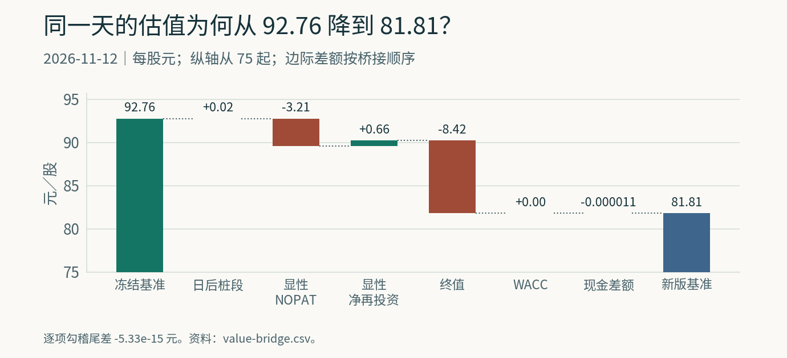
| 桥项 | 边际价差 | 过桥价 |
|---|---|---|
| 冻结基准 | 起点 | 92.758 |
| 估值日后桩段 | +0.018 | 92.776 |
| 显性期经营NOPAT | -3.208 | 89.568 |
| 显性期净再投资 | +0.662 | 90.230 |
| 终值路径 | -8.418 | 81.812 |
| 同日WACC | +0.000 | 81.812 |
| 货币资金与现金等价物差额 | -0.000 | 81.812 |
新基准为 81.81 元，从冻结值减少 -10.95 元。估值日后桩段变动约 +0.02 元，显性期经营 NOPAT 约 −3.21 元、显性期净再投资差约 +0.66 元，终值约 −8.42 元，WACC 不变，另将货币资金中 4,600 元非现金等价物扣除，每股减少约 0.00001133 元。收入从购买池到验收及组价的漏损到长期更显著。稳定期的均值还取决于硬件与残余组的毛利结构。新旧不同来自条件与模型结构，不涉及截止之后的披露修订或估值日选择。
价差桥单独展示显性 NOPAT 与净再投资，终值另展示盈余与稳定留存。先扣营运和购建，再引入债务与金融资产，公司自身股东权益不会被经营折现的假设重复计算。若编制下一版，应在原截止窗口重跑这条桥后再改新估值日期、股数或现金。
FCFF、WACC 和终值｜让长期纪律接到当期现金
折现率沿用阶段 14 的人民币口径近似。十年国债参考 1.60%，ERP 估计 5.32%，周度 β 用三分之二样本与三分之一单位回归。极少量金融与融资类租赁债务使用市场权重及税盾。基准 WACC 6.9274%。每个显性期从估值日期起折现，首段 49 天，后面逐年接上而不是把全年的 2026 现金当新收入。净营运增加、资本开支和经营租赁都已经在 FCFF 扣除。
稳定增长基准为 2.30%，新增 ROIC 23.50%，稳定留存约 9.79%，稳定 NOPAT 约 18.12 亿元，约 1.77 亿元再投入后形成约 16.34 亿元 FCFF。长期增长率低于 WACC，终值按 FCFF 除 WACC−g 再折现。基准终值占 EV 68.44%。新增 ROIC 较低且要保持同样增长时，留存增加，FCFF 下降。若估计的长期贴现率接近 g，模型敏感度会急升，不把超出条件的点估作可交易价格。
图表 35 同一长期增长下的资本纪律对照
| WACC | g | 新增ROIC | 价值·元 | 终值占EV |
|---|---|---|---|---|
| 5.93% | 2.30% | 23.50% | 101.24 | 74.21% |
| 6.93% | 2.30% | 14.00% | 77.55 | 67.58% |
| 6.93% | 2.30% | 23.50% | 81.81 | 68.44% |
| 6.93% | 2.30% | 32.00% | 83.48 | 68.74% |
| 7.93% | 2.30% | 23.50% | 69.30 | 63.15% |
显性末年资本纪律向长期转移。调整终值的模型需同时让显性后段向对应的增长、利润率和资本需求收敛。退出法作为另一个定价条件，将末年核心营业利润乘 15、25、35 倍换掉 Gordon 终值。这个测试保留相同折现、股本和现金权利。取两种终值相加会增加并不存在的经营流量。不同终值制度下价格跨度大，进一步说明晚期现金比当前报表利润更能改变同日价值。
企业价值到每股｜现金、少数权益和摊薄
2026 三季报 p5 列货币资金 21.3454 亿元、交易性金融资产 35.9603 亿元。同日桥保留经营现金 4.00 亿元。三季报 p12 现金及现金等价物较 p5 货币资金少 4,600 元；中报 p137、p154 明示相同差额来自冻结的 ETC 保证金。本稿将差额从可用现金扣除。交易性金融资产仍沿阶段 17 可使用代理，其他专户的调用条件需与募资专项衔接。若另查出 1 亿元不可使用且未已扣，每股减约 0.2463 元。金融资产估值已经给股东加回，理财税后利息不进经营收益资本化。
短期金融债扣 0.20322 亿元，流动租赁代理和非流动租赁合扣约 0.08677 亿元，保留能够辨认的金融类，不把账面未识别合同硬并。少数股权账面 0.48346 亿元，沿冻结按 1.6 倍约 0.77354 亿元扣除，集团现金流覆盖的少数单位要从权益端减回。全表净加 52.2421495225 亿元。通知回购或额外缓冲沿冻结值并单列，如需变更应以真实权利和现金日为准。
图表 36 企业价值到普通股权益
| 权益项 | 正负贡献·百万元 | 每股·元 |
|---|---|---|
| 货币资金 | 2,134.54 | 5.26 |
| 交易性金融资产 | 3,596.03 | 8.86 |
| 经营现金保留 | -400.00 | -0.99 |
| 回购通知／额外缓冲 | 0.00 | 0.00 |
| 金融负债 | -20.32 | -0.05 |
| 融资类租赁 | -8.68 | -0.02 |
| 少数归属 | -77.35 | -0.19 |
| 单列项目负债 | 0.00 | 0.00 |
| 非现金等价物差额 | -0.0046 | -0.000011 |
| 净权益桥 | 5,224.21 | 12.87 |
6 月转增及基数变动后股数 405,557,343，10 月归属登记增加 427,083，合计 405,984,426，与三季报股本核同。已登记部分进入分母，归属条件未到期的激励不得先算实际已发行。以基准权益不变、无新增行权现金的条件，每额外 100 万股会稀释约 0.20 元/股。若实际取得行权价现金、股份费用和税收优惠，应按行权及财报时点改变分母和权益。估值与期间会计 EPS 分母不相替代。
价格反推｜控制量与利润率怎样互换
对照 2027 控制量增速和稳定核心 EBIT 率，在相同日期将价格保持 96.20。控制量变动由新增订单冲击给出，从 2031 随正常化逐步淡出。利润率额外节约从 2030 逐步计入稳定期。其余如 WACC、归属股数、股权桥、税和增长都固定，再分别测试库存与售后。过价线左侧需要更高利润率，较低库存和服务让利润率要求下降；上行幅度有限时，组合贡献仍远低于收盘。
图表 37 96.20 元等值线｜纵轴稳定核心 EBIT 率，横轴 2027 控制量增速

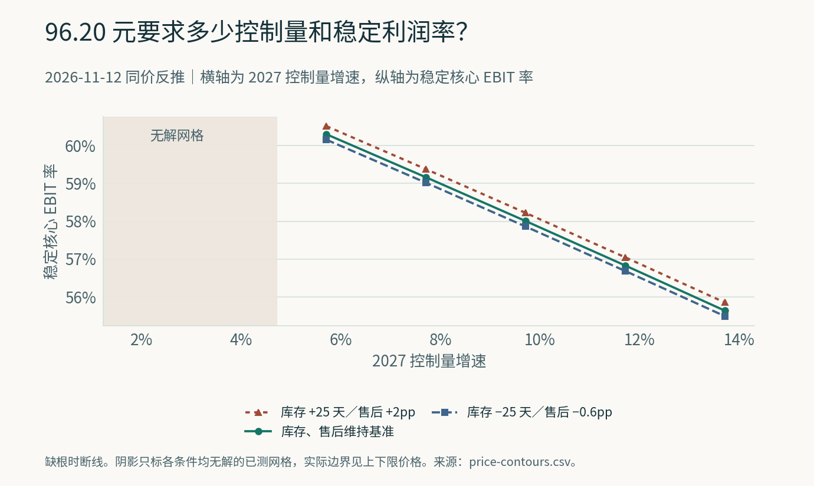
| 资本与履约条件 | 2027控制量增速 | 所需稳定核心率 | 回代元 |
|---|---|---|---|
| 备货与售后负担高 | 11.71% | 57.05% | 96.20 |
| 基准周转与售后 | 11.71% | 56.83% | 96.20 |
| 周转与售后较轻 | 11.71% | 56.69% | 96.20 |
曲线仅连接相邻有解网格。灰色范围覆盖三个条件都无解的已测组合，区间上下限的价值保留在底表。
例如 2027 控制量增长 11.71%，库存轻情景要求稳定核心 EBIT 率约 56.69%，库存及售后更重时要求约 57.05%。逐个网格节点允许调稳定利润率 −12～+14 个百分点，求根后回代。15 个有根节点的最大误差约 4.26e-14 元，6 个节点限于范围无根并保留边界值。在常态量增约 5.71% 且费用改善有限，单靠降低周转不能覆盖要求。与冻结根连续地讨论需要同时记录旧利润、终值和费率条件。
如取得两个连续周期的 OEM 批次净价和售后现金、库存归属及应收变化，可以重新量化控制量相对原预测的超额与稳定费用分摊。只有公司具备持续获得客户且不靠无效让利的证据时，接近等价线才是估值反转依据。
倍数与权益时间桥｜统一分母再跨期
同日用收盘 × 405,984,426 得市值约 390.56 亿元，减统一净金融桥得到 EV 约 338.31 亿元。滚动归母约 13.0870 亿元、核心 EBIT 约 10.9668 亿元、营业收入约 24.5560 亿元，分别得 P/E 29.84 倍、EV/核心 EBIT 30.85 倍及 EV/收入 13.78 倍。基准情景约对应 EV/滚动核心 EBIT 25.52 倍，显示市场比经营模型要求更高。2025-04-08 华创首发研报列价格 170.87 元、当日股数 205.4551 百万股，使用当时已知 2024 年报归母得到约 39.77 倍。分别以当日原价和股数对当时 LTM 归母，跨转增也不需要人为复权净利。
图表 38 自身不同估值日的同口径 P/E
| 市场日 | 原价·元 | 股数·百万 | 滚动归母·百万元 | P/E |
|---|---|---|---|---|
| 2025-04-08 | 170.87 | 205.46 | 882.71 | 39.77 |
| 2026-11-12 | 96.20 | 405.98 | 1,308.70 | 29.84 |
可比比较限定工具层。金橙子可检验精密振镜和设备差异，维宏部分伺服切割系统可检验竞争烈度，二者作为整公司也有非相同业务与利润分母。汇川、锐科和大族各有适合的产业位置，但 CNY A 股权利相同也无法使它们的集团估值成为柏楚纯控制系统倍数。没有可靠同口径单独估值时，跨公司仅作范围校验，不引入伪精确中位数。
2026-11-10 公告 11 月 16 日实施每股税前现金 0.582 元。固定其他条件，含权 96.20 机械对照 95.618 元，新基准 81.230 元。这是从含权价值减红利的算术，不是 11 月 16 日实际收盘或滚动股价。若做新窗口，需同时重取未复权收盘、经济股数、真实到账和当时可获的披露，先锁定权益桥，再更新市场观察。
判断怎样翻转｜同一组订单检验正反
正向假说是控制工艺复用使终端的单位时间产出、设备厂一次验收和下批留存同步改进。较高硬件附着从新单体现，净价足以覆盖采购与服务，库存释放后经营现金先行验证。反方同样能解释收入数据。行业换机及高功率渗透拉动新机和智能硬件，OEM 可要求配套降价、延长质保和付款，发货前置使存货逐步堆高。该路径即使收入扩张，财富积累更慢。2026Q3 毛利失速和贸易资本增加，与第二解释相容。
图表 39 正反两种经营下的重算（元/股）
| 方向 | 27控制量增速 | 库存天数变化 | 稳定核心率 | 每股价值 | 较基准 |
|---|---|---|---|---|---|
| 局部上修 | 8.21% | -25 | 48.97% | 85.60 | +3.79 |
| 局部下修 | 3.21% | 25 | 44.52% | 77.84 | -3.97 |
判别的量化方式是锁同一 OEM 某功率机型的新机、已有机型替换及返工计数，做上年与本期倒推；同机型按购价减折扣、返利和退换，按订单匹配验收与最终付款。客户投诉和售后人工若跨季，需要在服务期中按同一制度计入。若有批次出现 2027 控制量增速约 11.71%、稳定核心 EBIT 率达 56.69%，同时库存少 25 天且售后减 0.6 个百分点，条件值可回 96.20 元。该值对比原始经营数据中相应区间应持续两次经营周期。近端改善但尚未跨阈值时可以上修基准，不能把单个改善当成越过市价。
向下调整在增速较基准少 2.5 个百分点、稳定利润率少 2 个百分点、库存多 25 天和增量售后率高 2 个百分点的联合条件，价格约 77.84 元。向上调整相反的量率变化及较轻资本条件提高至 85.60 元。这两组区别现价门槛和经营数据容许的局部上下修，不将条件场景称为交易决策。
审阅裁定卡｜下一次披露怎样改变价值
优先审阅三个能改变价值的判断。第一是配套是否净留现金，区分订单附着、净额、安装维修与初期占款，财务组与产业组共核。第二是控制持续采购有多少超越景气，将同机型对照与少数头部客户回款匹配，估值组据此优先改新机胜率、续购及净价。第三是新业务是否已经跨到净收益，从公告预算、样机订单、验收和可辨认回款分别记录。对高功率份额、海外项目与精密加工不接受借用跨分母数据。未达标则留在条件底表，不撤销已在历史合并披露中的收入。
图表 40 团队裁定与参数方向
| 待字段 | 核对入口／负责人 | 参数及方向 |
|---|---|---|
| 同机型续购、报价与工时 | OEM配对；产业研究 | 净价与取得份额↑／竞价相反 |
| 合格订单附着、库龄及售后 | 订单＋三表；财务复核 | 毛利兑现、应收与库存↓／负面反转 |
| 项目实付、验收及已回款 | 合同／专户／项目经理 | 够门槛方加FCFF与资本 |
| 限制资金及未归属激励 | 募资专项＋登记；估值复核 | 可用资产与证券分母 |
| 路演与券商单位原稿 | 交易所与券商原PDF；证据复核 | 不进冻结窗；修订外部诊断 |
本次对 2022、2024/2025、2026Q3 共 103 个相关原表单元按文件 SHA、物理页、合并及期间列重核。折现与权益价值另走独立公式，三情景估值最大重算差 2.84e-14 元。累计季度和当季、有无转增的 EPS、原列与重列表、经营净现金与股东桥均保留独立口径。两份券商的错误与限制及路演答复状态留在证据表。在本发行人恢复原绑定后仍为 24 条有效 Fact，普通差分和本轮新解释不登记为变化 Fact。稿件保留团队审阅状态。